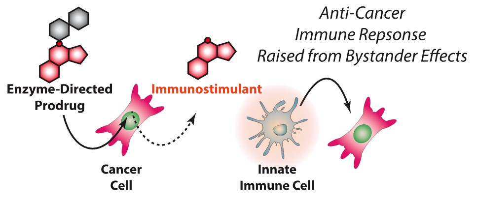
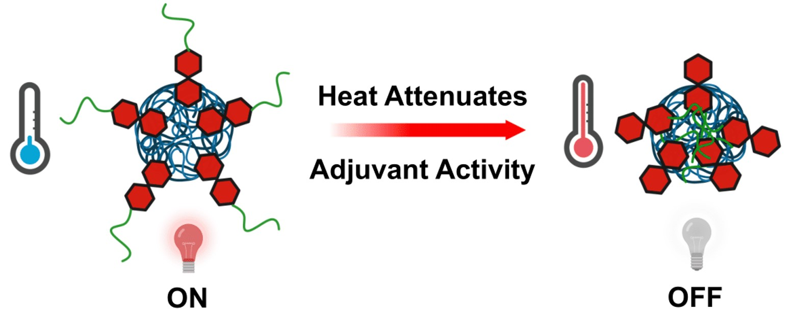
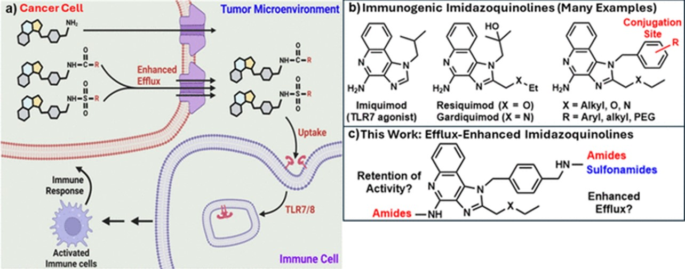
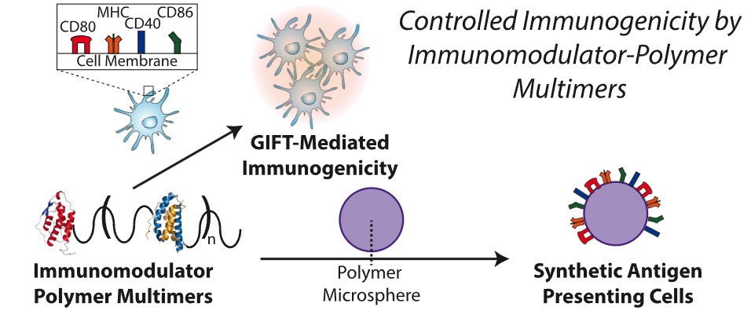
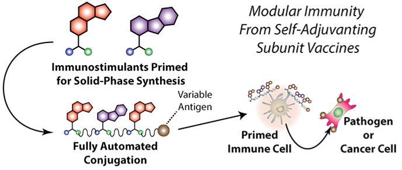

Pushing the boundaries of Synthetic Immunology

Overview of the BAIT mechanism of action which has the potential to drug drug-resistance itself.
Our lab has developed an approach to cancer therapy that exploits metabolism and trafficking mechanisms unique to multidrug resistant cancers to elicit an anti-cancer immune response.
Cancers are highly heterogeneous in nature which in part accounts for their difficulty in treatment. While many cancers are initially susceptible to chemotherapy, over time, chronic exposure to treatment, provides epigenetic pressure for survival of cancer cell populations that are resistant to chemotherapy. This results in recurrence of multidrug resistant cancers that no longer respond to traditional chemotherapies. Two changes to cancer cell metabolism and molecular trafficking are common among multidrug resistant cancers that allow them to resist traditional chemotherapy: 1) chemotherapeutics are degraded through upregulated hydrolase enzymes such as galactosidase or mannosidase and 2) chemotherapeutic drugs are trafficked outside of cancer cells by proteins involved in active transport, such a P-Glycoproteins. Both of these pathways act in tandem to diminish the anti-cancer effects of chemotherapeutic drugs. Our Bystander Assisted ImmunoTherapy (BAIT), technique exploits these changes in cancer cell metabolism and molecular trafficking to elicit an anti-cancer immune response. We hypothesized that the altered enzymatic activity of multidrug resistant cancers could be used to convert an inactive prodrug to a potent immunostimulant that could raise an anti-cancer immune response following trafficking to the extracellular space. If successful, this approach would not only produce anti-cancer effects, but would also provide epigenetic pressure to reverse the multidrug resistant phenotype thereby restoring sensitivity to more established chemotherapeutics. To satisfy the requirements for hydrolase conversion of prodrug to immunostimulant, we are developing several examples of hydrolase labile substrates that can act as a molecular switch to modulate the activity of immunostimulants. This results in enzyme-directed immunostimulants that activate nearby (bystander) immune cells exclusively in the presence of cancer cells that possess complimentary enzyme. To allow this to occur, we are simultaneously developing a library of structural parameters that establish a structure activity relationship for the susceptibility of immunostimulants to P-glycoprotein mediated trafficking.

Overview of the thermophobic mechanism where heating induces a phase transition that attenuates adjuvant potency.
We have developed the first synthetic vaccine adjuvants that automatically attenuate their own potency in response to the small temperature increases associated with pyrexia.
While vaccine adjuvants are essential for increasing the efficacy of modern vaccines, they often cause inflammatory side effects such as pyrexia (fever). This systemic reactogenicity currently limits the types and doses of adjuvants that can be safely used in clinical formulations. To date, most efforts to balance safety and efficacy rely on static dosing strategies that cannot adapt to the heterogeneous immune responses of individual patients. We hypothesized that combining a potent trehalose glycolipid adjuvant with a thermoresponsive polymer would allow for temperature-dependent "shielding" of the adjuvant's active motifs, thereby inversely linking its potency to the host's body temperature. Our thermophobic adjuvant technology utilizes copolymers of N-isopropylacrylamide (NIPAM) and a rationally designed, polymerizable trehalose glycolipid. These materials exhibit a sharp hydrophilic-to-hydrophobic phase transition within physiological ranges (near 37°C). Above this threshold—conditions mimicking pyrexia—the polymer collapses to occlude the lipid regions required for receptor activation, significantly reducing the production of inflammatory cytokines. In vivo studies demonstrate that these "smart" adjuvants enhance vaccine efficacy while maintaining a superior safety profile by limiting systemic inflammation.

Structure-activity relationships for imidazoquinoline efflux by P-glycoprotein in chemoresistant environments.
We are engineering small-molecule immunostimulants that exploit P-glycoprotein efflux—a primary mechanism of cancer drug resistance—to selectively accumulate in the tumor microenvironment.
Multidrug resistance (MDR) is frequently driven by the over-expression of ATP-binding cassette (ABC) transporters, such a P-glycoprotein (P-gp), which actively pump chemotherapeutics out of cancer cells. While this efflux usually hinders treatment, it presents a unique opportunity for targeted delivery to the extracellular space where immune cells reside. Imidazoquinolines, such as Imiquimod and Resiquimod, are potent Toll-like receptor (TLR) agonists that can activate these bystander immune cells if effectively trafficked. We hypothesized that by rationally modifying the imidazoquinoline scaffold, we could enhance its recognition by P-gp, thereby utilizing the cancer's own resistance machinery to "spray" immunostimulants into the surrounding tumor tissue. Our lab is optimizing these "Efflux-Optimized" molecules by establishing structural parameters that govern their interaction with efflux pumps. Through synthetic modification and computational modeling, we have demonstrated that specific N1-substitutions and core modifications can significantly increase P-gp-mediated transport. These efflux-enhanced imidazoquinolines are designed to bypass the traditional hurdles of chemoresistance, providing a pathway to reactivate the host immune response specifically within the protective niche of multidrug-resistant tumors.

One-pot synthesis of protein-polymer multimers precisely arrayed such that they trick the immune system into thinking it is interacting with an antigen presenting cell.
We are developing a new polymer-based bioconjugation platform to recreate the complex spatial array of proteins found on the surface of antigen presenting cells.
Granulocyte macrophage colony stimulating factor (GMCSF) and various InterLeukins (ILs) generate robust innate and adaptive immune responses potent enough to overcome the immunosuppressive signals of cancers and parasitic pathogens. Combining these proteins as GMCSF-IL Fusion Transgenes (GIFTs) further enhances this response. Beyond cytokines, a truly effective synthetic antigen-presenting cell (sAPC) must also present the complex protein architecture of the immunological synapse—including MHC-peptide complexes for signal 1 and co-stimulatory molecules like B7 for signal 2—to direct T-cell specificity. Although promising, this technique necessarily requires the engineering of an entirely new organism for the expression of each GIFT and is further limited in that it is not amenable to the attachment of multiple Interleukins to GMCSF simultaneously. To circumvent this problem, we have developed a new approach to polymer linked protein heterodimers synthesized in one-pot. Our method exploits known differences in kinetic kact parameters between a variety of common monomers and initiators in Atom Transfer Radical Polymerization to terminate growing polymer chains via asymmetric Atom Transfer Radical Couplings. We are using this newly developed methodology along with established bioconjugation techniques to generate synthetic GIFTs in one-pot reactions using asymmetric Atom Transfer Radical Couplings. Apart from broader use in the field of protein-polymer conjugates, we envision that combining this methodology with bi-functional GMCSF macro-initiators enables the synthesis of GIFTs that contain multiple ILs, further enhancing immune modulating effects.

Utilizing solid-phase peptide synthesis and proximity-accelerated bioconjugation to expand the chemical space of immunostimulants.
We are developing a high-throughput platform that makes immunostimulants amenable to solid-phase peptide synthesis (SPPS), enabling the rapid exploration of multivalent structural parameters.
The structural parameters of multivalency, molecular weight, and density have been explored extensively in the rational design of novel immunostimulants. Although general trends have been observed for each of these parameters, most observations are empirical; libraries of a small number of compounds are tested for immunogenic properties while attempting to rationalize any observable trends. Because specialty chemistry or bioconjugation techniques are used to produce each of these molecules, library sizes are limited. Therefore, using a technique that is amenable to automation and multiplexing, such as solid-phase peptide synthesis (SPPS), would help further our understanding of how each parameter contributes to immunogenicity. We hypothesized that making immunostimulants amenable to SPPS would enable more extensive exploration of the immunostimulant chemical space, providing a better understanding of structural contributions to immune activation. Complementary to this, we are investigating ligand-directed proximity-accelerated bioconjugation—using scaffolds like nitrophenol carbonates—to enable the transient, in situ attachment and time-dependent release of therapeutic payloads from proteins. To bridge these approaches, we conjugate immunostimulants to the side-chain of amino acids, such as the ε-position of lysine, creating "amino acid immunostimulants." This results in a chemical reagent that can be incorporated into various sequences via automated SPPS, and deliver an immunostimulant payload following a proximity accelerated reaction with a biological target. Currently we are developing this technique with emerging peptide epitopopes that bind tumor associated antigens. These synthetic tools, which turn proteins into functional depots for bioavailable drug release, contribute to the rational design of the next generation of multivalent immunotherapies.